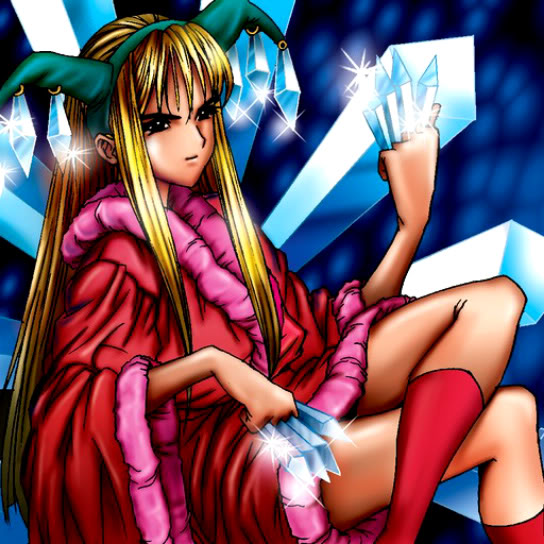

Princess of Tsurugi

STATS
ATK: 900
DEF: 700DECK COST
Deck Cost per Card: 16Fusion List (46 Possible Fusions)
- Princess of Tsurugi + Abyss Flower = Queen of Autumn Leaves
- Princess of Tsurugi + Air Marmot of Nefariousness = Nekogal #2
- Princess of Tsurugi + Ancient Jar = Mystical Sand
- Princess of Tsurugi + Armaill = Charubin the Fire Knight
- Princess of Tsurugi + Blue-Eyed Silver Zombie = Zombie Warrior
- Princess of Tsurugi + Charubin the Fire Knight = Flame Swordsman
- Princess of Tsurugi + Crawling Dragon #2 = Sword Arm of Dragon
- Princess of Tsurugi + Dancing Elf = Celtic Guardian
- Princess of Tsurugi + Dark Plant = Queen of Autumn Leaves
- Princess of Tsurugi + Darkworld Thorns = Queen of Autumn Leaves
- Princess of Tsurugi + Dig Beak = Nekogal #2
- Princess of Tsurugi + Dragon Piper = Charubin the Fire Knight
- Princess of Tsurugi + Fire Eye = Charubin the Fire Knight
- Princess of Tsurugi + Firegrass = Queen of Autumn Leaves
- Princess of Tsurugi + Flower Wolf = Nekogal #2
- Princess of Tsurugi + Garoozis = Nekogal #2
- Princess of Tsurugi + Goddess with the Third Eye = Dark Witch
- Princess of Tsurugi + Graveyard and the Hand of Invitation = Zombie Warrior
- Princess of Tsurugi + Griggle = Queen of Autumn Leaves
- Princess of Tsurugi + Hane-Hane = Nekogal #2
- Princess of Tsurugi + Happy Lover = Dark Witch
- Princess of Tsurugi + Harpie Lady = Punished Eagle
- Princess of Tsurugi + Hoshiningen = Dark Witch
- Princess of Tsurugi + Hourglass of Life = Dark Witch
- Princess of Tsurugi + Jinzo #7 = Cyber Soldier
- Princess of Tsurugi + Key Mace = Dark Witch
- Princess of Tsurugi + Little Chimera = Nekogal #2
- Princess of Tsurugi + Living Vase = Nekogal #2
- Princess of Tsurugi + Lunar Queen Elzaim = Dark Witch
- Princess of Tsurugi + Milus Radiant = Nekogal #2
- Princess of Tsurugi + Mushroom Man = Queen of Autumn Leaves
- Princess of Tsurugi + Mystical Elf = Celtic Guardian
- Princess of Tsurugi + Pot the Trick = Mystical Sand
- Princess of Tsurugi + Rainbow Flower = Queen of Autumn Leaves
- Princess of Tsurugi + Ray & Temperature = Dark Witch
- Princess of Tsurugi + Shining Friendship = Dark Witch
- Princess of Tsurugi + Silver Fang = Nekogal #2
- Princess of Tsurugi + Skelengel = Dark Witch
- Princess of Tsurugi + Skull Servant = Zombie Warrior
- Princess of Tsurugi + Sleeping Lion = Nekogal #2
- Princess of Tsurugi + Steel Scorpion = Cyber Soldier
- Princess of Tsurugi + The Judgement Hand = Judge Man
- Princess of Tsurugi + Weather Control = Dark Witch
- Princess of Tsurugi + Wings of Wicked Flame = Flame Swordsman
- Princess of Tsurugi + Wood Remains = Zombie Warrior
- Princess of Tsurugi + Yamatano Dragon Scroll = Dragoness the Wicked Knight